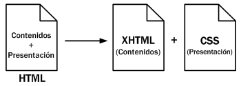
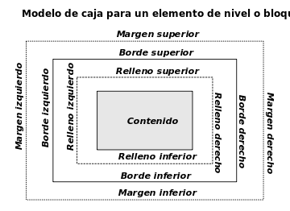

Originalmente, las páginas HTML sólo incluían información sobre sus contenidos de texto e imágenes. Con el desarrollo del estándar HTML, las páginas empezaron a incluir también información sobre el aspecto de sus contenidos: tipos de letra, colores y márgenes.
La posterior aparición de tecnologías como JavaScript, provocaron que las páginas HTML también incluyeran el código de las aplicaciones (llamadas scripts) que se utilizan para crear páginas web dinámicas.
Incluir en una misma página HTML los contenidos, el diseño y la programación complica en exceso su mantenimiento. Normalmente, los contenidos y el diseño de la página web son responsabilidad de diferentes personas, por lo que es conveniente separarlos.
CSS es el mecanismo que permite separar los contenidos definidos mediante XHTML y el aspecto que deben presentar esos contenidos:

Figura 1.2 Esquema de la separación de los contenidos y su presentación
Una ventaja añadida de la separación de los contenidos y su presentación es que los documentos XHTML creados son más flexibles, ya que se adaptan mejor a las diferentes plataformas: pantallas de ordenador, pantallas de dispositivos móviles, impresoras y dispositivos utilizados por personas discapacitadas.
De esta forma, utilizando exclusivamente XHTML se crean páginas web "feas" pero correctas. Aplicando CSS, se pueden crear páginas "bonitas" a partir de las páginas XHTML correctas.
Sintaxis CSS
CSS tiene una sintaxis muy sencilla, que usa unas cuantas palabras clave tomadas del inglés para especificar los nombres de varias propiedades de estilo.
Una hoja de estilo se compone de una lista de reglas. Cada regla o conjunto de reglas consiste en uno o más selectores y un bloque de declaración (o <bloque de estilo>) con los estilos a aplicar para los elementos del documento que cumplan con el selector que les precede. Cada bloque de estilos se define entre llaves, y está formado por una o varias declaraciones de estilo con el formato propiedad:valor;.
En el CSS, los selectores marcarán qué elementos se verán afectados por cada bloque de estilo que les siga, y pueden afectar a uno o varios elementos a la vez, en función de su tipo, nombre (name), ID, clase (class), posición dentro del Document Object Model, etcétera.

Figura 1.3: Modelo de caja
Formas de usar CSS
Para dar formato a un documento HTML, puede emplearse CSS de tres formas distintas:
Mediante CSS introducido por el autor del HTML
Un estilo en línea (online) es un método para insertar el lenguaje de estilo de página directamente dentro de una etiqueta HTML. Esta manera de proceder no es totalmente adecuada. El incrustar la descripción del formateo dentro del documento de la página Web, a nivel de código, se convierte en una manera larga, tediosa y poco elegante de resolver el problema de la programación de la página. Este modo de trabajo se podría usar de manera ocasional si se pretende aplicar un formateo con prisa, al vuelo. No es todo lo claro o estructurado que debería ser, pero funciona.
Dado que los clientes de correo electrónico no soportan las hojas de estilos externas, y que no existen estándares que los fabricantes de clientes de correo respeten para utilizar CSS en este contexto, la solución más recomendable para maquetar correos electrónicos, es utilizar CSS dentro de los propios elementos (online).
Una hoja de estilo interna, que es una hoja de estilo que está incrustada dentro de un documento HTML, dentro del elemento <head>, marcada por la etiqueta <style>. De esta manera se obtiene el beneficio de separar la información del estilo del código HTML propiamente dicho. Se puede optar por copiar la hoja de estilo incrustada de una página a otra (esta posibilidad es difícil de ejecutar si se desea para guardar las copias sincronizadas). En general, la única vez que se usa una hoja de estilo interna, es cuando se quiere proporcionar alguna característica a una página Web en un simple fichero, por ejemplo, si se está enviando algo a la página Web.
Una hoja de estilo externa, es una hoja de estilo que está almacenada en un archivo diferente al archivo donde se almacena el código HTML de la página Web. Esta es la manera de programar más potente, porque separa completamente las reglas de formateo para la página HTML de la estructura básica de la página.
Estilos CSS introducidos por el usuario que ve el documento, mediante un archivo CSS especificado mediante las configuraciones del navegador, y que sobreescribe los estilos definidos por el autor en una, o varias páginas web.
Los estilos marcados "por defecto" por los user agent, para diferentes elementos de un documento HTML, como por ejemplo, los enlaces.
Niveles e historia
CSS se ha creado en varios niveles y perfiles. Cada nivel de CSS se construye sobre el anterior, generalmente añadiendo funciones al previo.
Los perfiles son, generalmente, parte de uno o varios niveles de CSS definidos para un dispositivo o interfaz particular. Actualmente, pueden usarse perfiles para dispositivos móviles, impresoras o televisiones.
CSS1
La primera especificación oficial de CSS, recomendada por la W3C fue CSS1, publicada en diciembre 1996,3 y abandonada en abril de 2008.
Algunas de las funcionalidades que ofrece son:
Propiedades de las Fuente, como tipo, tamaño, énfasis...
Color de texto, fondos, bordes u otros elementos.
Atributos del texto, como espaciado entre palabras, letras, líneas, etcétera.
Alineación de textos, imágenes, tablas u otros.
Propiedades de caja, como margen, borde, relleno o espaciado.
Propiedades de identificación y presentación de listas.